Who Should Not Take Birth Control Pills?
A woman who has any of the following signs should not take oral (or injected)
contraceptives:
• A woman whose period is late, who thinks she might be pregnant.
• Deep or steady pain in one leg.
This may be caused by an inflamed vein (phlebitis or blood clot). Do not use birth control pills. (Women with varicose veins that are not inflamed can usually take birth control pills without problems. But they should stop taking them if the veins become inflamed.)
• Stroke. A woman who has had any signs of a stroke (p. 327) should not take the pill.
• Hepatitis (p. 172), cirrhosis
(p. 328), or other liver disease.
Women with these problems, or whose eyes had a yellow color during pregnancy, should not take the pill. It is better not to take oral contraceptives for one year after having hepatitis.
• Cancer. If you have had or suspect cancer of the breast or womb, do not use oral contraceptives. Before beginning oral contraceptives, examine your breasts carefully (see p. 279). In some health centers you may also be able to get a simple test (Pap smear or vinegar test) to check for cancer of the cervix or opening of the womb. Birth control pills have not been proven to cause cancer of the breasts or womb. But if cancer already exists, the pill can make it worse.
Some health problems may be made worse by oral contraceptives. If you have any of the following problems, it is better to use another method if you can:
• Migraine (p. 162). Women who suffer from true migraine headaches should not take oral contraceptives. But simple headaches that go away with aspirin are no reason not to take the pill.
• Heart disease (p. 325).
• High blood pressure (p. 125).
If you suffer from tuberculosis, diabetes, gall bladder problems, kidney disease, or epilepsy, it is best to get medical advice before taking birth control pills. However, most women with these diseases can take oral contraceptives without harm.
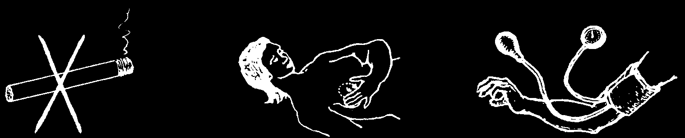
Precautions Women Should Take when Using Birth Control Pills
1. Do not smoke,
2. Examine the breasts
3. If possible, have especially if you are carefully every month for your blood pressure over 35. It can cause lumps or possible signs measured every heart problems.
of cancer (see page 279).
6 months.
4. Watch for any of the problems mentioned on page 288, especially:
• Severe and frequent migraine headaches (p. 162).
• Dizziness, headache, or loss of consciousness that results in difficulty in seeing, speaking, or moving part of the face or body (see Stroke, p. 327).
• Pain with inflammation in a leg or hip (chance of a blood clot).
• Severe or repeated pain in the chest (see Heart Problems, p. 325).
• Severe pain in the abdomen.
If one of these problems develops, stop taking the pill and get medical advice. Avoid pregnancy by using another method, as these problems also make pregnancy especially dangerous.
Questions and Answers about Birth Control Pills
Some people claim birth
No! However, if cancer of the breast control pills cause cancer.
or womb already exists, taking the pill
Is this true?
may make the tumor grow faster.
Can a woman have
Yes. (Sometimes there is a delay children again if she of 1 or 2 months before she can stops taking the pill?
become pregnant.)
Is the chance of having
No. The chances are the same twins or defective children as for women who have not greater if a woman has taken the pill.
used oral contraceptives?
Is it true that a mother’s
It is best to wait until her milk is coming breasts will dry up if she in well before starting to take the pills.
starts taking birth control
This usually takes about 3 weeks. After pills?
that, the pills are perfectly safe for women who are breastfeeding.
She can also take the 'mini pill’ (p. 394), which contains so little hormone that it does not affect the milk, even in the first 3 weeks.
For information on the selection of birth control pills, see pages 394 and 395.

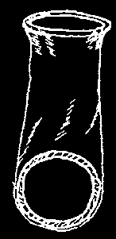
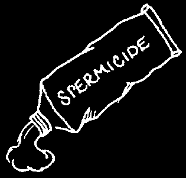
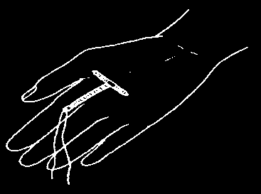
OTHER METHODS OF FAMILY PLANNING
THE CONDOM is a thin rubber sheath that covers the man’s penis. It prevents the man’s sperm from entering the woman’s vagina and womb during sex. Condoms made of latex are also the best protection against STIs and HIV. The condom should be put on when the man’s penis is hard but before it touches the woman’s genitals. After he ejaculates (comes), the man should hold the condom and withdraw from the woman’s vagina while the penis is still hard. Then take off the condom without spilling the sperm, tie it shut, and discard it. A couple should use a new condom every time they have sex. Keep condoms in a cool, dry place away from sunlight. Condoms from old or torn packages are more likely to break.
THE CONDOM FOR WOMEN is a thin, plastic sheath that fits inside the vagina. A flexible ring at the closed end of the condom holds it in place. The other ring at the open end hangs out, covering the outer lips of the vagina.
This condom can be put in up to 6 hours before sex and should be taken out immediately after sex. It should be used only once, because it may break if it is washed and reused. But washing out and reusing a female condom up to
5 times is better than no condom. The female condom is the most effective method controlled by women for protecting against both pregnancy and
STIs, including HIV. The female condom should not be used with a male condom.
THE DIAPHRAGM is a shallow cup made of soft rubber that a woman wears in her vagina. It can be put in anytime and should be left in for at least 6 hours after having sex. Diaphragms come in different sizes.
A trained health worker can recommend the right size for each woman.
After each use, the woman should wash the diaphragm with soap and water, and dry it. Keep it in a clean dry place. A diaphragm usually lasts about 2 years. Check it regularly for holes by holding it up to the light.
If there is even a tiny hole, get a new one. A diaphragm may give some protection against STIs.
SPERMICIDES are foam, tablets, cream, or jelly that are put into the vagina before having sex. Spermicide kills the man’s sperm before it can get into the womb. It does not protect against STIs or
HIV. Tablets should be put in the vagina 10 to 15 minutes before having sex. Foam, jelly, or cream work best if they are put in the vagina just before having sex. Add spermicide each time you have sex. After sex, do not douche or wash the spermicide out for at least 6 hours. Some spermicides can cause itching or irritation inside the vagina.
THE INTRAUTERINE DEVICE (IUD) is a small object that is inserted in the womb by a specially trained health worker or midwife. The
IUD prevents the man’s sperm from fertilizing the woman’s egg. The
IUD can be inserted any time a woman and her health worker are reasonably sure the woman is not pregnant and does not have any signs of a vaginal infection or an STI. A woman can ask a trained health care worker or midwife to remove the IUD any time she wants to change methods or get pregnant. The IUD does not protect against STIs.
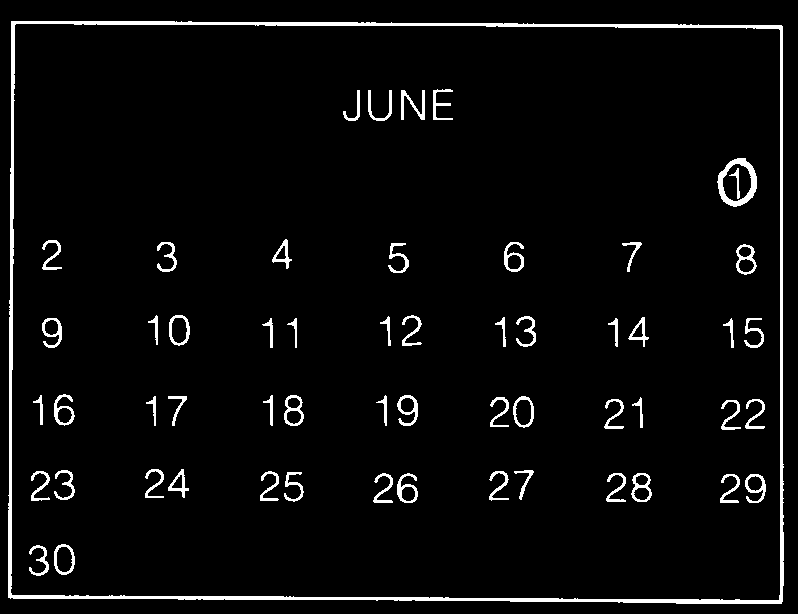

THE COUNTING DAYS METHOD
This method is not very sure to prevent pregnancy, but it has the advantage of not costing anything. It is more likely to work for a woman whose periods come very regularly, more or less once every 28 days. Also, the husband and wife must be willing to pass 11 days out of each month without having sex the regular way.
Usually a woman has a chance of becoming pregnant only during 11 days of her monthly cycle—her 'fertile days’. These 11 days come midway between her periods, beginning 8 days after the first day of menstrual bleeding. To avoid getting pregnant, a woman should not have sex with her man during these 11 days. During the rest of the month, she is not likely to get pregnant.
To avoid confusion the woman should mark on a calendar the 11 days she is not to have sex.
For example: Suppose your period begins on the 5th day of May. Count that as day number 1.
Mark it like this:
Then count 8 days. Starting with the 8th day, put a line under the next 11 days like this:
During these 11 'fertile days’, do not have sexual relations.
Now suppose your next period begins on the first of June. Mark it the same way, like this:
Once again count off 8 days and underline the following 11 days in which you will not have sexual contact.
If the woman and her husband carefully avoid having sex together during these
11 days of each month, it is possible that they will go years without having another child. However, few couples are successful for very long. This is not a very sure method, unless used in combination with another method such as a diaphragm or condoms, especially during the days from the end of the menstrual period until the fertile days are over.
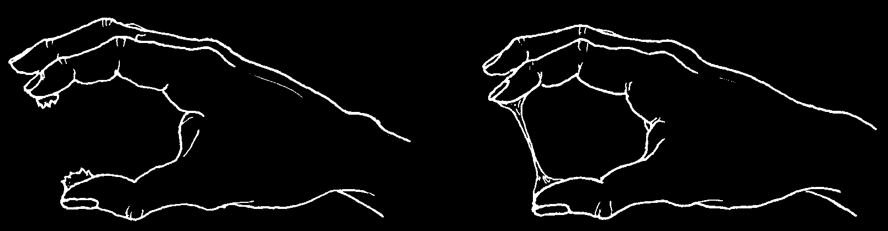
THE MUCUS METHOD
This is a variation of the counting days method. A woman finds out when she could become pregnant by checking the mucus in her vagina every day. It works fairly well for some couples but not for others. In general it cannot be considered a very sure way of preventing pregnancy, but it costs nothing and has no risks other than those that come with pregnancy itself. However, it is more difficult to do if the woman has a vaginal infection with a lot of discharge, if her periods are not regular, or if she douches or washes out her vagina.
Every day, except during her period, the woman should examine the mucus from her vagina. Take a little mucus out of your vagina with a clean finger and try to make it stretch between your thumb and forefinger, like this:
As long as the mucus is sticky like
When the mucus begins to get slippery or paste—not slippery or slimy—you slimy, like raw egg, or if it stretches between probably cannot become pregnant, your fingers, you may become pregnant and can continue to have sexual if you have sexual relations. So, do not relations.
have sex when the mucus is slippery or stretches, or until 2 days after it has stopped being slippery or stretchy and has become sticky again.
The mucus will usually become slippery during a few days midway between your periods. These are the same days you would not have sex with your man if you were using the counting days method.
To be more sure, use the mucus and counting days methods together. To be still more sure, see below. The mucus and counting days methods do not protect against
STIs, including HIV.
Combined Methods
If you want to be more certain not to become pregnant, it often helps to use
2 methods at the same time. The counting days or mucus method combined with the use of a condom, diaphragm, spermicide, or sponge is surer than any of these methods alone. Likewise, if a man uses condoms and the woman a diaphragm, the chance of pregnancy is very low.


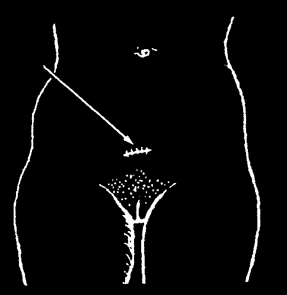
INJECTIONS. In this family planning method, a woman is given injections of hormones every 1 to 3 months, usually at a health center or family planning clinic, by someone who knows how. The first injection can be given any time a woman and her health worker are reasonably sure the woman is not pregnant. The injection protects against pregnancy immediately if it is given within 5 days after monthly bleeding begins. If the injection is given 6 or more days after the beginning of monthly bleeding, the woman and her partner should use condoms or not have sex for the next 7 days. For more information see page 396.
IMPLANTS are small, soft tubes that are placed under the skin on the inside of a woman’s arm. These tubes contain the hormone progestin and prevent pregnancy from 6 months to 5 years, depending on the type of implant. The tubes must be inserted and removed by a trained health worker, usually at a clinic or family planning center. They can be inserted any time a woman and her health worker are reasonably sure the woman is not pregnant. If a woman is breastfeeding, implants can be inserted 6 weeks after the baby was born. For more information see page 397.
METHODS FOR THOSE WHO NEVER WANT TO HAVE MORE CHILDREN
STERILIZATION. For those who never want to have more children, there are fairly safe, simple operations for both men and women. In many countries these operations are free. Ask at the health center. Sterilization does not protect against
STIs, including HIV.
• For men, the operation is called a vasectomy. It can be done simply and quickly in a doctor’s office or a health center, usually without putting the man to sleep. Small cuts are made here so that the tubes from the man’s testicles can be cut and tied. The testicles are not removed.
The operation has no effect on the man’s sexual ability or pleasure. His fluid comes just the same, but has no sperm in it.
• For women, the operation is called a tubal ligation, which means to tie the tubes. One method is to make a small cut in the lower belly so that the tubes coming from the ovaries, or egg-makers, can be cut and tied. It can usually be done in a doctor’s office or health center without putting the woman to sleep.
Although usually successful, there is a higher risk of infection in the operation for women than for men.
This operation has no effect on the woman’s menstrual periods or sexual ability, and may make having sex more pleasant because she does not have to worry about pregnancy.


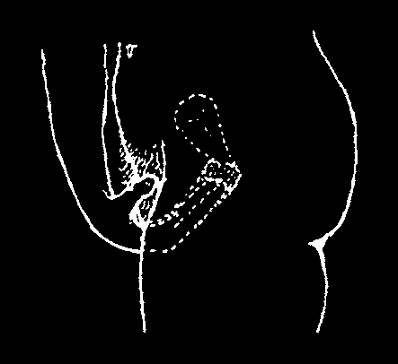
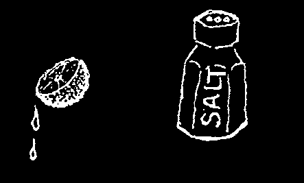
HOME METHODS FOR PREVENTING PREGNANCY
Every community has traditional methods to prevent or stop pregnancy. Some of these can help limit the number of children a couple has, but they are usually not as effective as modern methods. Some traditional methods can be harmful, and some do not work at all. For example, washing out the vagina or urinating after sex will not prevent pregnancy.
WITHDRAWAL OR PULLING OUT (coitus interruptus). The man pulls his penis out of the woman and away from her genitals before the sperm comes. This method is better than no method, but it does not always work. Sometimes a man is not able to pull out before he ejaculates (comes). Even if the man pulls out in time, some liquid that contains sperm can leak out of his penis before ejaculation and cause pregnancy.
BREASTFEEDING FOR THE FIRST 6 months.
Breastfeeding is an effective method of family planning only when these 3 conditions are true:
1. The woman’s baby is less than 6 months old.
2. The woman has not had her monthly bleeding since giving birth.
3. The woman is giving the baby only breast milk, and is feeding the baby whenever he is hungry—with no more than 6 hours between feedings—day and night. The baby does not sleep through the night without feeding.
THE SPONGE METHOD. This is a home method that is not harmful and sometimes works. You cannot be sure it will prevent pregnancy every time, and it does not protect against HIV or other STIs, but it can be used when no other method is available.
You will need a sponge and either vinegar, lemons, or salt.
Either a sea sponge or an artificial sponge will work. If you do not have a sponge, try a ball of cotton, wild kapok, or soft cloth.
♦ Mix:
2 tablespoons vinegar in 1 cup clean water or
1 teaspoon lemon juice in 1 cup clean water or
1 spoon of salt in 4 spoons clean water
♦ Wet the sponge with one of these liquids.
♦ Push the wet sponge deep into your vagina before having sex.
You can put it in up to 1 hour before.
♦ Leave the sponge in at least 6 hours after having sex.
Then take it out. If you have trouble getting it out, next time tie a ribbon or piece of string to it that you can pull.
The sponge can be washed and used again, many times.
Keep it in a clean, dry place.
You can make up the liquid in advance and keep it in a bottle.

CHAPTER
Health and Sicknesses of Children
WHAT TO DO TO PROTECT CHILDREN’S HEALTH
NUTRITIOUS FOOD,
CLEANLINESS,
AND VACCINATIONS
ARE THE THREE IMPORTANT 'BODY GUARDS’ THAT
KEEP CHILDREN HEALTHY AND PROTECT THEM AGAINST MANY SICKNESSES.
Chapters 11 and 12 tell more about the importance of nutritious food, cleanliness, and vaccination. Parents should read these chapters carefully and use them to help care for—and teach—their children. The main points are briefly repeated here.
Nutritious Food
It is important that children eat the most nutritious foods they can get, so that they grow well and do not get sick.
The best foods for children at different ages are:
♦ in the first 6 months: breast milk and nothing more.
♦ from 6 months to 1 year: breast milk and also other nutritious foods— such as boiled cereals, mashed-up beans, eggs, meat, cooked fruits and vegetables.
♦ from 1 year on: the child should eat the same foods as adults—but more often. To the main food (rice, maize, wheat, potatoes, or cassava) add 'helper foods’ as discussed in Chapter 11.
♦ Above all, children should get enough to eat—several times a day.
♦ All parents should watch for signs of malnutrition in their children and should give them the best food they can.
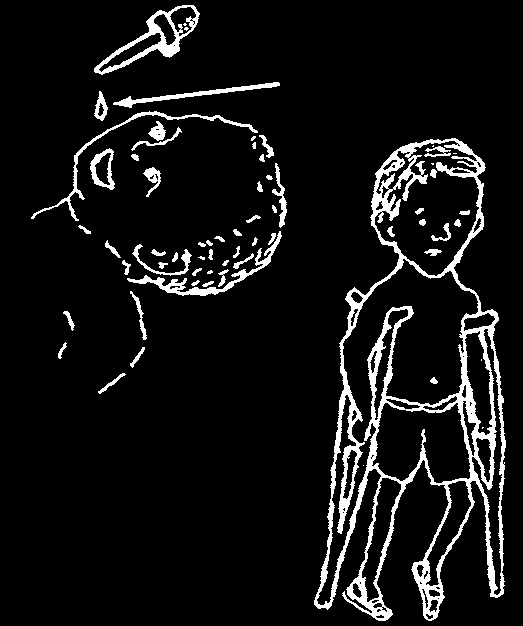
Cleanliness
Children are more likely to be healthy if their village, their homes, and they themselves are kept clean. Follow the Guidelines of Cleanliness explained in
Chapter 12. Teach children to follow them—and to understand their importance. Here the most important guidelines are repeated:
• Bathe children and change their clothes often.
• Teach children always to wash their hands when they get up in the morning, after they have a bowel movement, and before they eat or handle food.
• Make latrines or 'outhouses’—and teach children to use them.
• Where hookworm exists, do not let children go barefoot; use sandals or shoes.
• Teach children to brush their teeth; and do not give them a lot of candies, sweets, or carbonated drinks.
• Cut fingernails very short.
• Do not let children who are sick or have sores, scabies, lice, or ringworm sleep with other children or use the same clothing or towels.
• Treat children quickly for scabies, ringworm, intestinal worms, and other infections that spread easily from child to child.
• Do not let children put dirty things in their mouths or let dogs or cats lick their faces.
• Keep pigs, dogs, and chickens out of the house.
• Use only pure, boiled, or filtered water for drinking. This is especially important for babies.
• Do not feed babies from 'baby bottles’, because these are hard to keep clean and can cause illness. Feed babies with a cup and spoon.
Vaccinations
DO THIS
polio vaccine
Vaccinations protect children against many of the most dangerous diseases of childhood— whooping cough, diphtheria, tetanus, polio, measles, tuberculosis, hepatitis, and rotavirus.
Children should be given the different vaccinations at different ages, as shown on page 147. Polio vaccines should be first given if possible at birth, but no later than
AND
2 months of age, because the risk of developing
PREVENT
infantile paralysis (polio) is highest in babies
THIS
under 1 year old.
Tetanus of the newborn can be prevented by vaccinating mothers against tetanus during pregnancy (see p. 250).
Be sure your children get all the vaccinations they need.

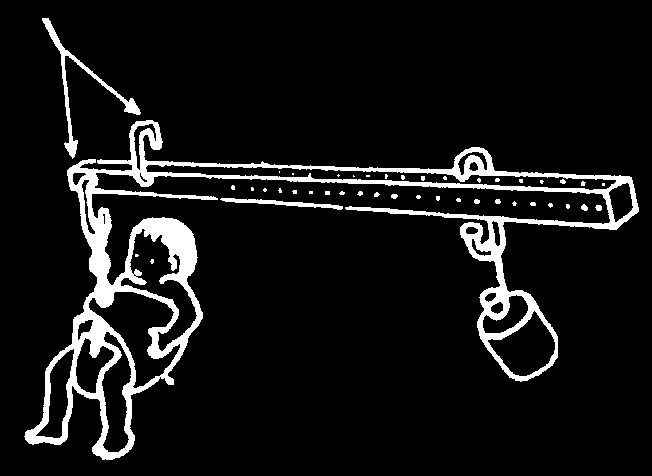
CHILDREN’S GROWTH—AND THE 'ROAD TO HEALTH’
A healthy child grows steadily. If he eats enough nutritious food, and has no serious illness, a child gains weight each month.
A child who grows well is healthy.
A child who gains weight more slowly than other children, stops gaining weight, or is losing weight is not healthy. He may not be eating enough or he may have a serious illness, or both.
A good way to check whether a child is healthy and is getting enough nutritious food is to weigh him each month and see if he gains weight normally. If a monthly record of the child’s weight is kept on a Child Health Chart, it is easy to see at a glance whether the child is gaining weight normally.
When used well, the charts tell mothers and health workers when a child is not growing normally, so they can take early action. They can make sure the child gets more to eat, and can check for and treat any illness the child may have.
On the next page is a typical Child Health Chart showing the 'road to health’. This chart can be cut out and copied. Or larger, ready-made cards can be obtained (in
English, Spanish, Portuguese, or Zulu) from Teaching Aids at Low Cost (TALC, see p. 431 for address). Similar charts are produced in local languages by the Health
Departments in many countries.
It is a good idea for every mother to keep a Child Health Chart for each of her children under 5 years of age. If there is a health center or 'under-fives clinic’
nearby, she should take her children, with their charts, to be weighed and to have a
'check-up’ each month. The health worker can help explain the Chart and its use. To protect the Chart, keep it in a plastic envelope.
HOMEMADE BEAM SCALE
DIRECT
You can make a beam scale of dry wood or bamboo.
RECORDING
Place all hooks as shown and hang the scale. To make
SCALE
kg. marks on the beam, fill 2 plastic one-liter bottles with water. Place the first bottle where baby would hang.
Hang the second bottle, and where beam balances, available make the 1 kg. mark, and so on. With a ruler, measure from TALC the distance between the marks, and make marks for
(see p. 431)
200, 400, 600, and 800 grams.
two hooks about 5 cm. apart
The growth chart slips in behind the scale hangs from this hook scales so you can beam (1 meter long)
mark the child’s weight directly onto the chart.
It is best to hang this and other movable weight scales close to the
(about 1 kilogram)
child ground. A baby holder may be scared of hanging up high.
Weight is correct when beam stays horizontal.
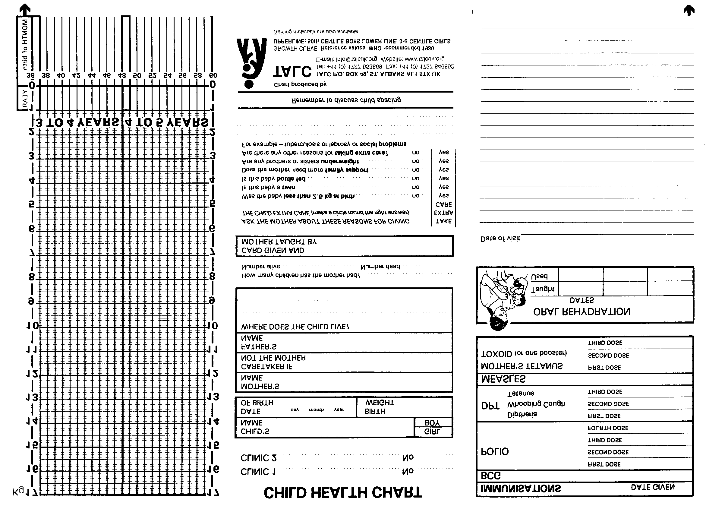
SIDE ONE
ds 2006
d CENTILE GIRLS
owth Standar ecommended Child Gr
WHO r
VE
GROWTH CUR
UPPERLINE: 50TH CENTIL BOYS, LOWERLINE: 3r

SIDE TWO


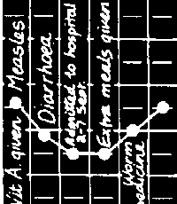

How to Use the Child Health Chart
FIRST, write the months of the year in the little squares at the bottom of the chart.
Write the month the baby was born in the first square for each year.
simple
This chart shows the baby was born in March.
hanging scales
SECOND, weigh the child.
Let us suppose that a child was born in April. It is now August, and the child weighs 6 kilograms.
THIRD, look at the card.
Kilograms are written on the side of the card.
Look for the number of kilograms the child weighs
(in this case, 6).
WATCH THE DIRECTION
OF THE LINE SHOWING
THE CHILD’S GROWTH
GOOD
Child growing well
DANGER
Not gaining weight find out why
VERY DANGEROUS
Losing weight.
May be ill, needs extra care.
WRITE ON THE CHART
Any illness e.g. diarrhea measles
Admission to hospital
Solids introduced
Breastfeeding stopped
Birth of next child like this—
Then look for the present month at the bottom of the cart (in this case,
August of the baby’s first year).
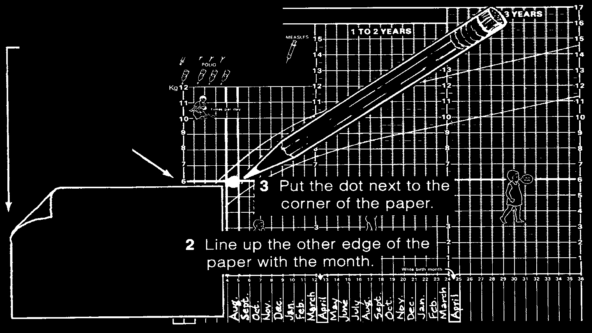
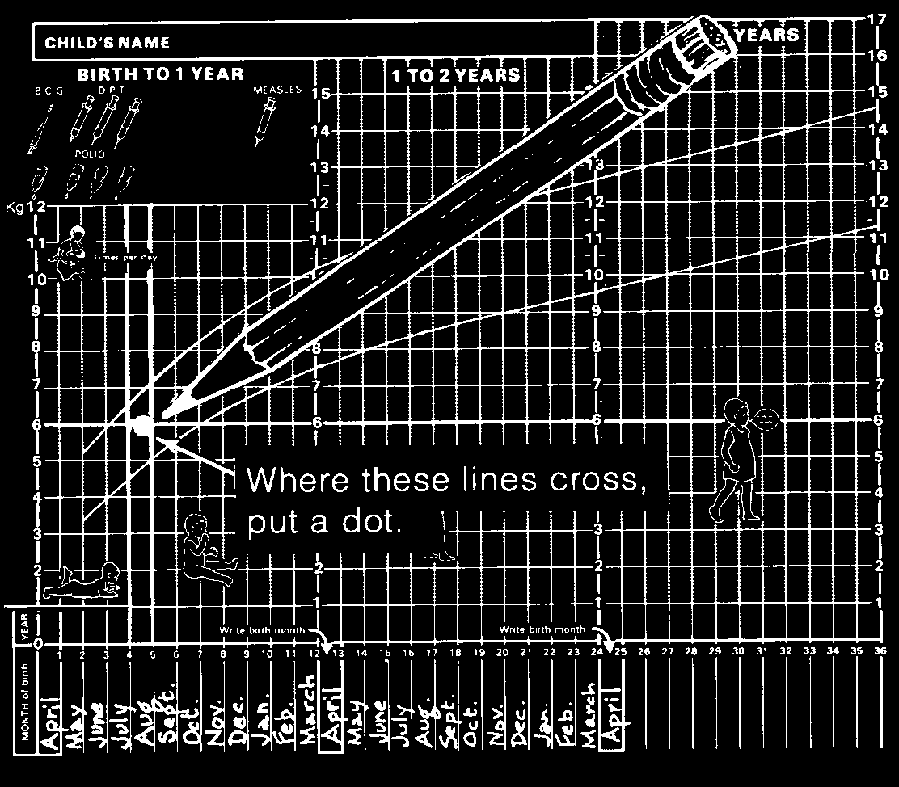

FOURTH, follow the line that goes out from the 6 and the lines that go up from August.
It is easy to know where to put the dot if you hold a square piece of paper against the chart.
1 Line up one edge of the paper with the child’s weight.
Each month weigh the child and put another dot on the chart.
If the child is healthy, each month the new dot will be higher on the chart than the last.
To see how well the child is growing, join the dots with lines.

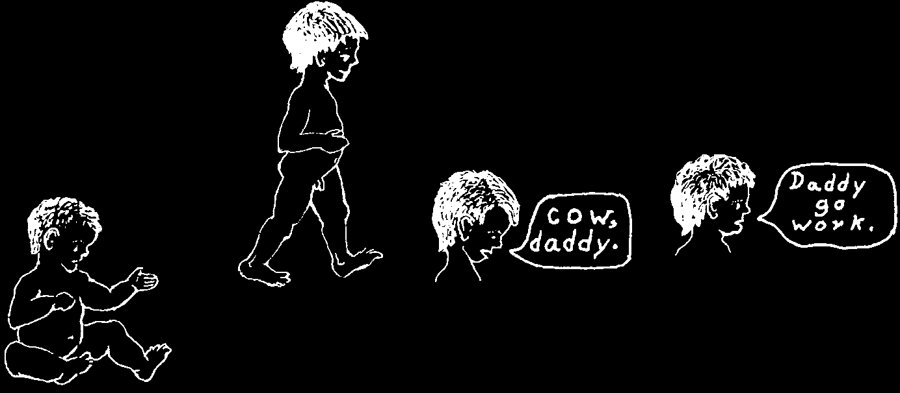


How to Read the Child Health Chart
The 2 long curved lines on the chart mark the 'Road to Health’ that a child’s weight should follow.
The line of dots marks the child’s weight from month to month, and from year to year.
In most normal, healthy children, the line of dots falls between the 2 long curved lines. That is why the space between these lines is called the Road to Health.
If the line of dots rises steadily, month after month, in the same direction as the long curved lines, this is also a sign that the child is healthy.
A healthy child who gets enough nourishing food usually begins to sit, walk, and speak at about the times shown here.
Typical chart of
THE HEALTHY,
WELL-NOURISHED
CHILD
Walks 10 steps
Single
Short without help.
words.
phrases.
Sits third year without
12 to 16 help.
months
11 to 18 months
6 to 8 months
In the healthy,
well-nourished
child, the weight rises steadily. The dots usually lie inside the lines that mark the
Road to Health.
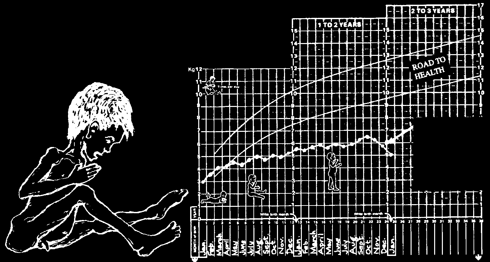